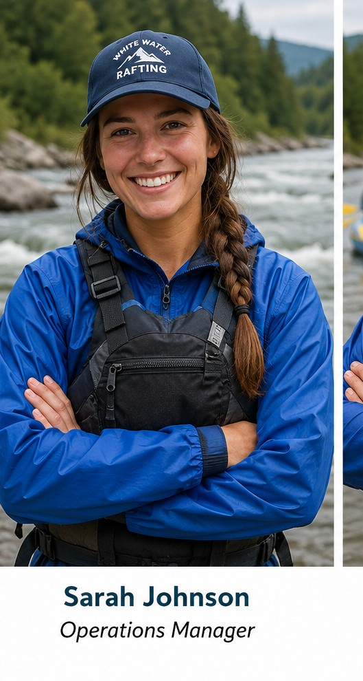
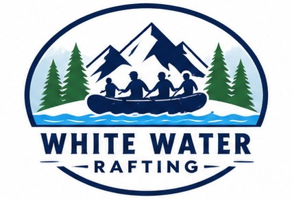
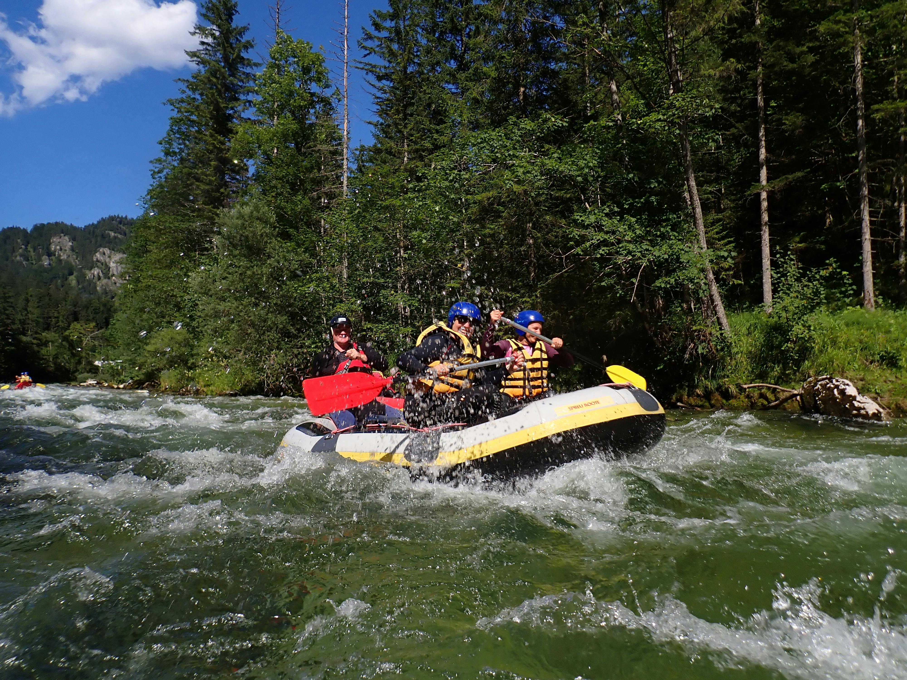
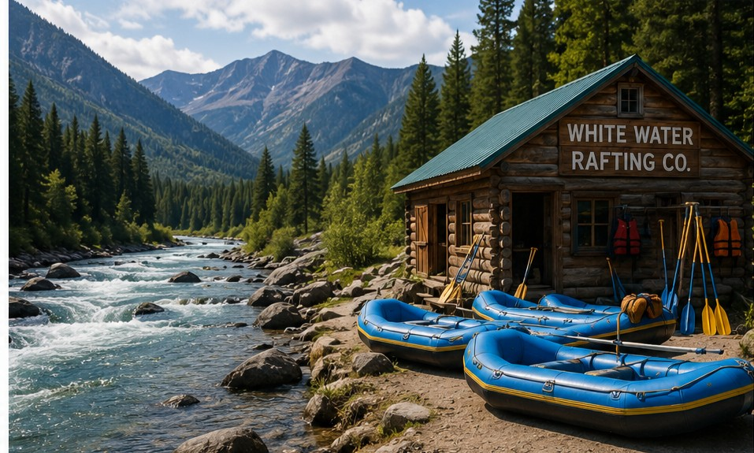
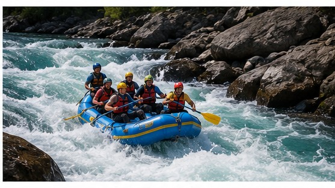
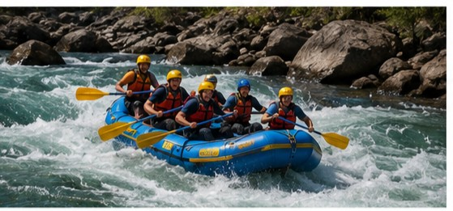
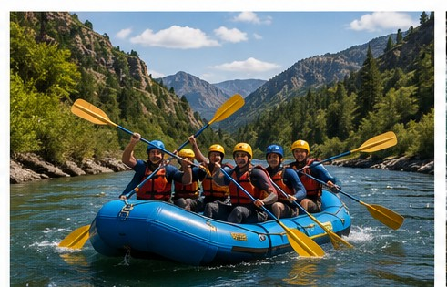
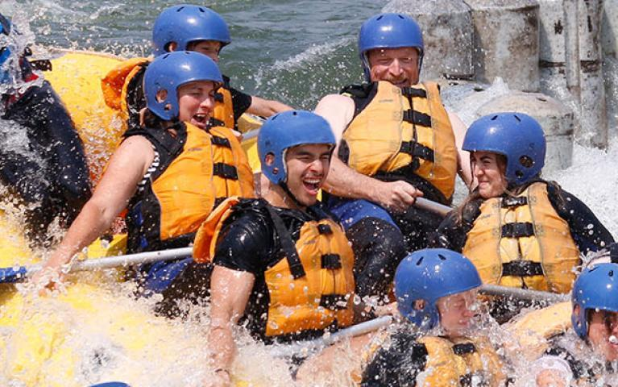
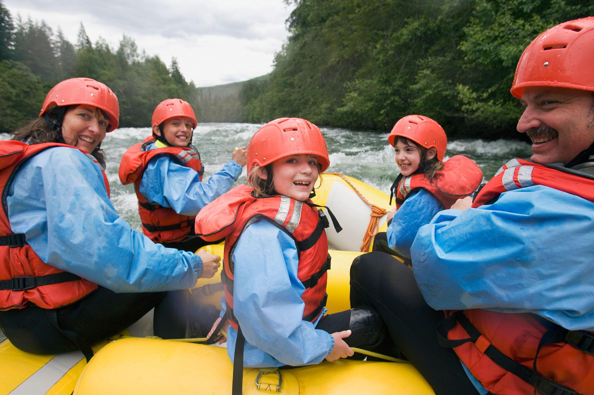

Our mission is to provide unforgettable white water rafting adventures while maintaining the highest standards of safety, professionalism, and customer satisfaction.



Our mission is to provide unforgettable white water rafting adventures while maintaining the highest standards of safety, professionalism, and customer satisfaction.
Founded in 2010, White Water Rafting Adventures began with a passion for outdoor recreation and river exploration. Our experienced team started with a single raft and a vision of sharing unforgettable adventures with visitors from around the world.

Today, we proudly guide hundreds of guests each year through exciting river journeys. Our commitment to safety, environmental stewardship, and excellent customer service has made us one of the region's most trusted rafting companies.




